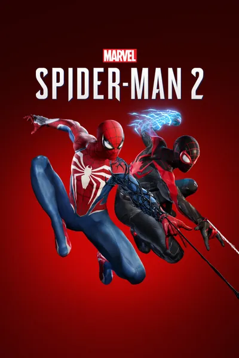

Marvel's Spider-Man 2
Эталонная привязка к системной калибровке PS5 (HGiG) и настройки 120 Гц / VRR
📺 Дисплей и системная калибровка HDR
PS5 Calibration • HGiG (1:1)
Режим Tone Mapping на ТВ
HGiG
Правило PS5 Calibration = HGiG: Движок Insomniac напрямую считывает параметры системного меню «Настройка HDR» консоли PS5. Включите HGiG на телевизоре перед калибровкой консоли для точной передачи светлых бликов без клиппинга.
Системная калибровка PS5 (3 экрана)
1 и 2 — до исчезновения • 3 — до упора вниз (0)
Почему так: На 1-м и 2-м экранах доведите солнце ровно до грани исчезновения при включённом HGiG. На 3-м экране (уровень чёрного) опустите ползунок в самый низ для чистого нулевого чёрного на OLED.
Яркость (Brightness) внутри игры
50 (По умолчанию)
Почему не трогаем: Ползунок меняет только общую экспозицию средних тонов (Paper White), а не пиковую яркость. Значение 50 сохраняет авторский баланс дня и ночи.
Контрастность (Contrast) внутри игры
50 (По умолчанию)
Почему 50: Повышение контраста выше 50 начинает давить детали в глубоких тенях и клипповать яркие неоновые вывески.
⚙️ Графика, 120 Гц и постобработка
Режим графики (Graphics Mode)
Быстродействие (60 FPS) / Качество (40 FPS при 120 Гц)
Почему: В игре аппаратная трассировка лучей включена во всех режимах. На ТВ с HDMI 2.1 (120 Гц) режим «Качество» работает при плавных 40 FPS, а «Быстродействие» выдаёт 60+ FPS.
Режим дисплея 120 Гц (120 Hz Display Mode)
Авто
Зачем включать: Активирует вывод в контейнере 120 Гц, снижая задержку ввода и открывая режим 40 FPS в пресете «Качество».
Переменная частота обновления (VRR)
Плавная (Smoothed) или Без ограничений
Почему: Убирает микрофризы при полётах на паутине над плотным трафиком Манхэттена.
Зернистость плёнки (Film Grain)
0
Почему 0: Полностью убирает искусственный шум в ночных сценах и делает отражения на небоскрёбах идеально чистыми.
Хроматическая аберрация (Chromatic Aberration)
Выкл
Почему выключаем: Избавляет контуры объектов на периферии экрана от цветного расслоения.
Размытие в движении (Motion Blur)
0 – 3 (По вкусу)
Почему: В Spider-Man 2 качественный пообъектный моушн-блюр, но на OLED-экранах при 60–120 Гц значения 0–3 дают лучшую читаемость во время полётов.